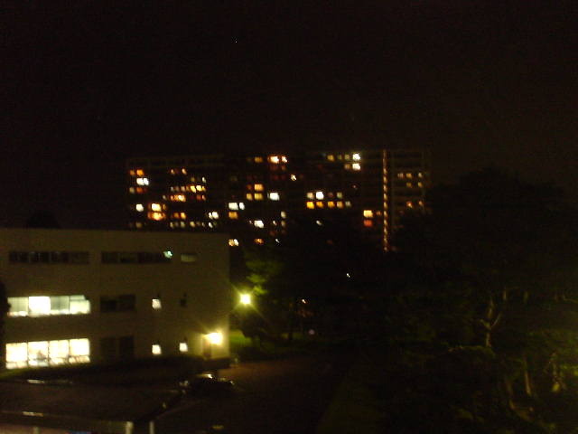

前の写真
2003-10-31
次の写真
ダイアパレスの夜景

撮影日時: 2003-10-31 22:07:55
メディアユニオンの渡り廊下から眺めたところ、入居者が入ってきたのでだいぶ明るくみえる。手前は研究棟の院生室。
前の写真
2003-10-31
次の写真
高久雅生 (Takaku Masao)
http://nile.ulis.ac.jp/~masao/
,
masao@ulis.ac.jp